Normas & Formatação
Compilado de normas e regras de formatação necessárias na hora da criação de seu artigo.
Formatação de trabalhos acadêmicos de acordo com a Associação Brasileira de Normas Técnicas (ABNT)
Clique para ver a formatação
Como ferramenta de exemplo visual, foi escolhido o Google Docs, por ser uma ferramenta de acesso gratuito e de ampla utilização.
Margem: 3 cm para as margens superior e esquerda e 2 cm para as margens inferior e direita
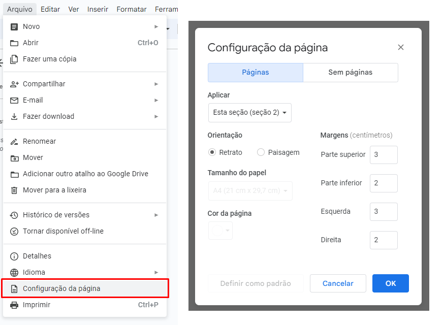 Fonte: Arial ou Times New Roman (tamanho 12) em cor preta
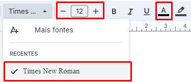 Itálico: usa-se em palavras e expressões de outros idiomas
 Espaçamento: 1,5 no texto e 1,0 para citações com mais de três linhas
Espaçamento: 1,5 no texto e 1,0 para citações com mais de três linhas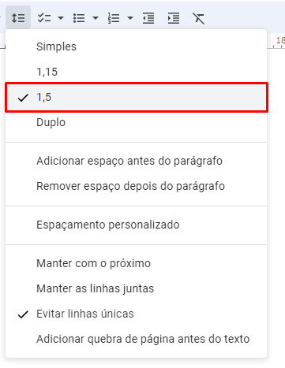 Recuo de 1,25cm na primeira linha de cada parágrafo
Atenção: esse recuo somente deve ser aplicado na primeira linha de cada parágrafo, para isso, selecione o texto e vá para a seta de recuo
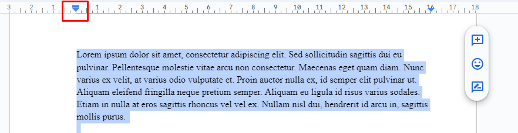
Note que a seta se divide em duas partes. Para aplicar o recuo somente na primeira linha, deve-se arrastar a metade de cima da seta até a marca dos 1,25cm
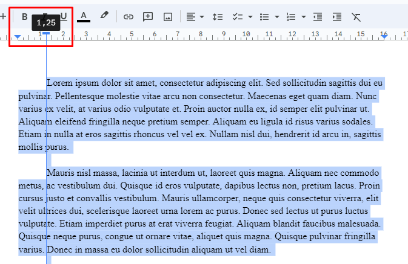
Forma de alinhamento do texto: Justificado
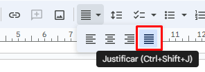
Paginação (NBR 14724)
A paginação deverá ser incluída na margem superior direita da folha. A capa do trabalho não deverá ser contata e os elementos pré-textuais (folha de rosto, resumo e sumário) não deverão receber paginação.
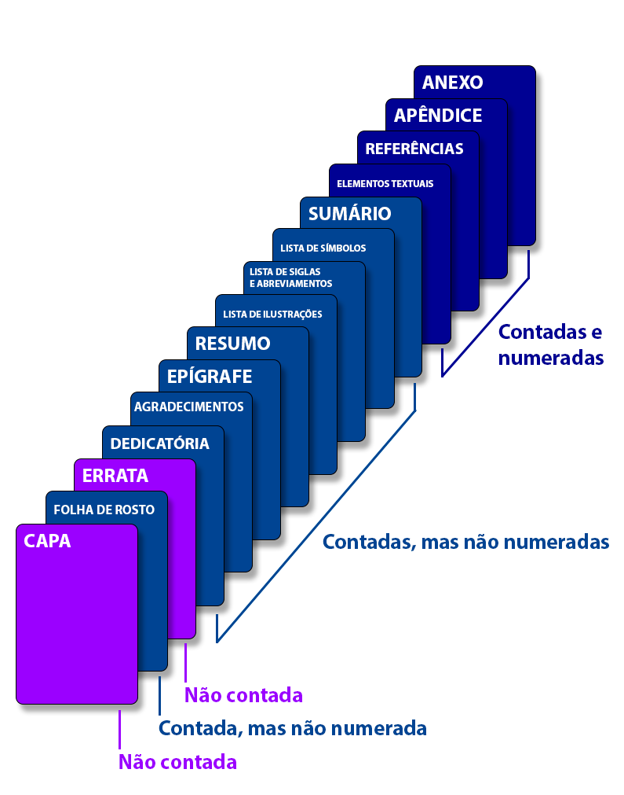
Para incluir paginação no Docs
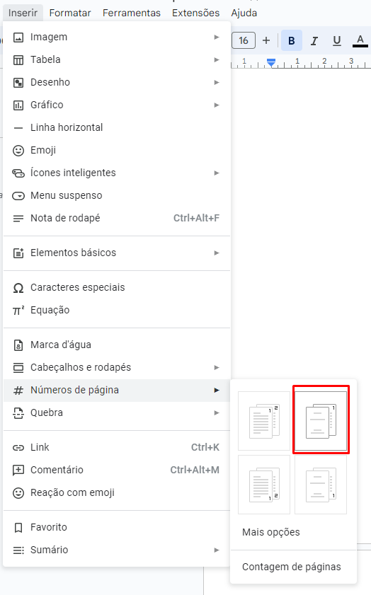
Citações (NBR 6023)
Citação no texto:
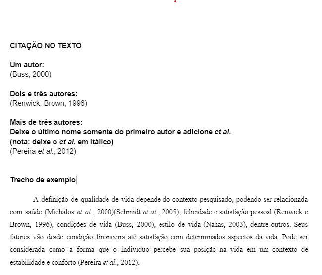
Citação direta curta (até três linhas):
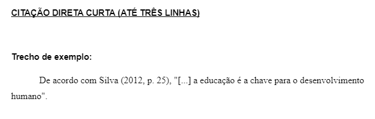
Citação direta longa (mais de três linhas):
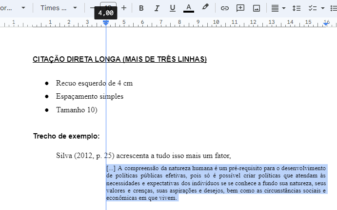
Referências bibliográficas
PS: Para gerar referências bibliográficas de artigos de periódicos nas normas ABNT, você também pode usar a função "Gerar Referências" no menu da Toolkit do Pesquisador:
Pontos de formatação:
Espaçamento: simples
Alinhamento: á esquerda
Ordenação: as referências bibliográficas devem estar ordenadas em ordem alfabética
Como escrever referências bibliográficas para livros:
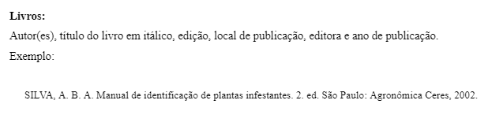
Como escrever referências bibliográficas para artigos de periódicos:
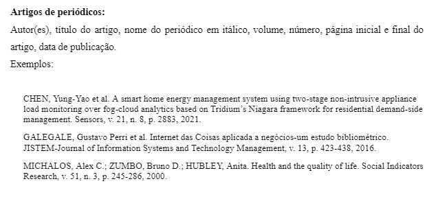
Como escrever referências bibliográficas para teses e dissertações:
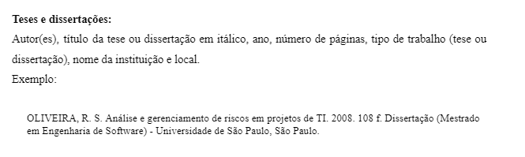